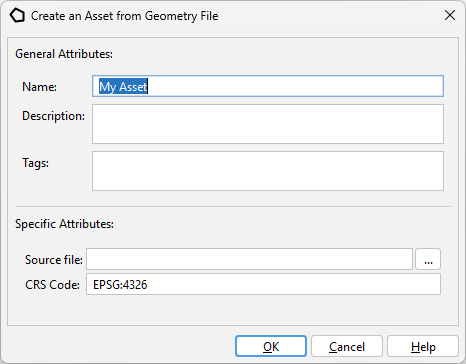
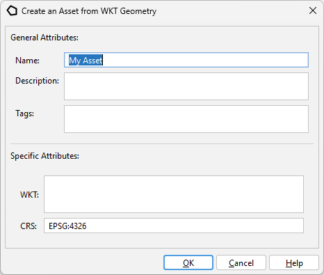
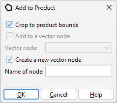

|
|
EOMasters Toolbox | |
This type holds geometries covering areas on Earth. Geometries can be points, lines, polygons or even multi-polygons.
Geometries can be added to the library from geometry files. These can be ESRI Shapefiles or simple text files containing WKT.

When selecting a Shapefile (*.shp) then the CRS information from this file is taken, if provided. Otherwise, the reference system for the geometry will be created using the CRS code.
When selecting a file containing WKT formatted text, the reference system for the geometry will be created using the CRS code. The extension of the selected file is not important, it must only be different to the shapefile extension.
Here the WKT formatted text can be directly provided. The coordinate reference system used for the geometry will be created using the CRS code.

When adding a geometry to a product you have some options how this is done.
